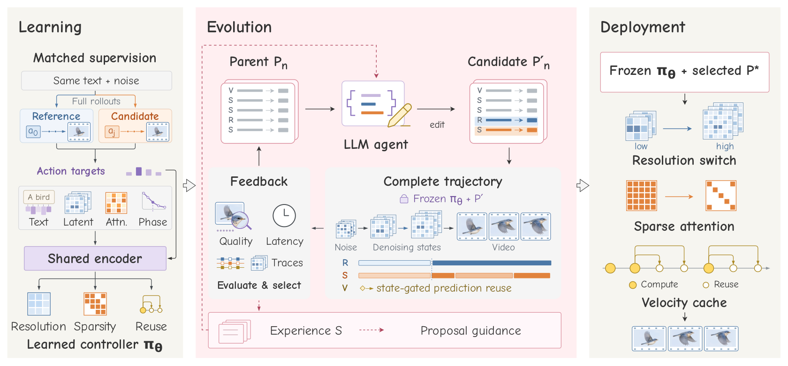
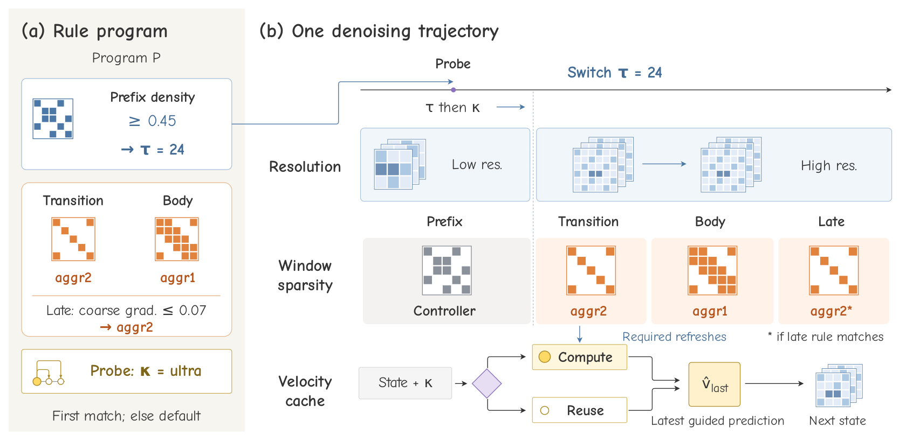

Learn state-conditioned actions
A shared controller learns from counterfactual trajectories that use the same prompt and initial noise. It reads text, latents, attention, and denoising progress.
CoLE decides when to increase resolution, how much attention to compute, and when to reuse predictions along a video denoising trajectory.
Eight side-by-side comparisons and a step-by-step look at the policy CoLE executes for the tai chi example.
Clip-level speedups in the video use Native Wan’s mean VBench latency as the reference. CoLE clip times are estimates based on denoising time plus a fixed 2.996 s allowance.
“A person is tai chi”
Selected comparisons share prompts. Native Wan and CoLE use different random seeds in these clips.
Changing one denoising decision alters the state that later decisions see. CoLE learns from matched rollouts and evaluates joint policy edits on complete trajectories.

A shared controller learns from counterfactual trajectories that use the same prompt and initial noise. It reads text, latents, attention, and denoising progress.
An LLM agent proposes edits to a conditional rule program using quality, latency, and execution traces. Each candidate reruns the full trajectory with downstream decisions recomputed.
The frozen resolution–sparsity controller and selected program coordinate the resolution switch, attention sparsity, and prediction reuse. The LLM runs only during offline search.

Wan2.1-T2V-1.3B on VBench and EvalCrafter. Speedups use Native Wan as the baseline for each benchmark.
181.0 s30.6 s
Mean end-to-end latency
181.94 s27.61 s
Mean end-to-end latency
| Method | VBench | EvalCrafter | ||||
|---|---|---|---|---|---|---|
| Total ↑ | E2E (s) ↓ | Speedup ↑ | Total ↑ | E2E (s) ↓ | Speedup ↑ | |
| Native Wan | 82.439 | 180.971 | 1.00× | 227 | 181.94 | 1.00× |
| Sparge | 82.119 | 108.315 | 1.67× | 227 | 109.14 | 1.67× |
| TeaCache | 82.035 | 96.074 | 1.88× | 227 | 95.90 | 1.90× |
| SVG2 | 81.974 | 120.523 | 1.50× | 225 | 158.82 | 1.15× |
| CoLE-L | 82.274 | 43.292 | 4.18× | 229 | 39.26 | 4.63× |
| CoLE | 82.254 | 30.604 | 5.91× | 228 | 27.61 | 6.59× |
End-to-end latency includes text encoding, generation, VAE decoding, and postprocessing. CoLE-L uses learned readouts for all three mechanisms.